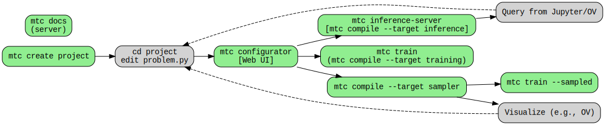

problem.pyA problem is defined using the p object imported from the cfg.py local module. The object
provides facilities to:
Problem variables as well as "adjustable functions" are defined by declaring neural networks.
The adjustable functions u_metal and u_air below are defined by declaring two neural
networks in the example below.
[x, y, a, b, Q, airT], [u_metal] = p.add_neural_network(
name="metalNN",
inputs=["x", "y", "a", "b", "Q", "airT"],
outputs=["u_metal"],
)
[x, y, a, b, Q, airT], [u_air] = p.add_neural_network(
name="airNN",
inputs=["x", "y", "a", "b", "Q", "airT"],
outputs=["u_air"],
)
And this can be accomplished with a single neural network like this:
[x, y, a, b, Q, airT], [u_air, u_metal] = p.add_neural_network(
name="air_metalNN",
nn_type="fully_connected",
inputs=["x", "y", "a", "b", "Q", "airT"],
outputs=["u_air", "u_air"],
)
How one chooses to do this depends on the problem and the training plan defined at a later stage.
Once the problem variables are defined as above, more complex models may be defined using the variables and the adjustable functions (outputs of neural networks). This is the general form
model = p.add_submodel(model_name: str, model: sympy.Expr)
Registering models in this way will make them available for inference later. The main reason is to provide a
model_name so we can refer to it later.
For example, to ensure that boundary conditions are strictly enforced, we can define a sub-model g_metal
as follows:
zf = (x - x0) * (x - x1)
vf = zf + a + (b - a) * (x - x0) / 2.0
g_metal = p.add_submodel("g_metal", u_metal * zf + vf)
A collection model is useful for combining the learned sub-models into the models that are ultimately needed. For
example, if g() is defined on part of the domain, and h() on the rest, then a collection
model allows to define a f() as
p.set_model(
name: str,
[
{"func": <submodel1>, "on": <sympy.BoolExpr>,
{"func": <submodel2>, "on": <sympy.BoolExpr>,
],
)
for example
p.set_model(
"f",
[
{"func": g, "on": And(y > mny, y < mxy)},
{"func": h, "on": ~And(y > mny, y < mxy)},
],
)
Equation constraints take the following form
p.set_constraints(
{
"<constraint-name>": enforce(equation=<sympy.Eq>, on_domain=<sub-domain>),
...
}
)
Data constraints are

$ mtc
Usage: python -m mtc.mtc [OPTIONS] COMMAND [ARGS]...
Options:
--help Show this message and exit.
Commands:
compile Compile problem into a train.py script or an infer.py
configurator Start the Modulus Project Configurator server
create Create new Modulus project
docs Modulus Simplified API Docs Server
fix-conf Fix the config file if needed
inference-server start an inference server
show Show information info_type= problem | training
train Train models